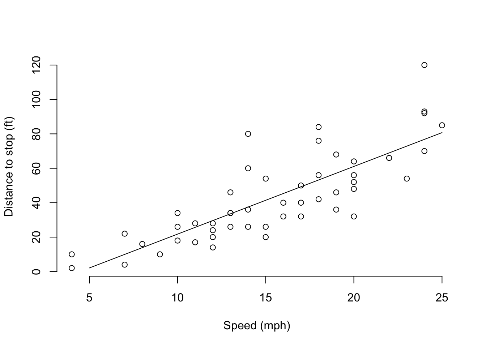
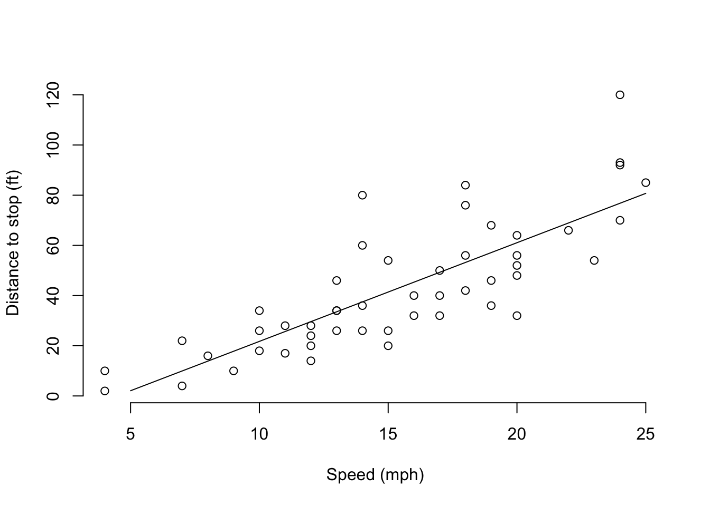
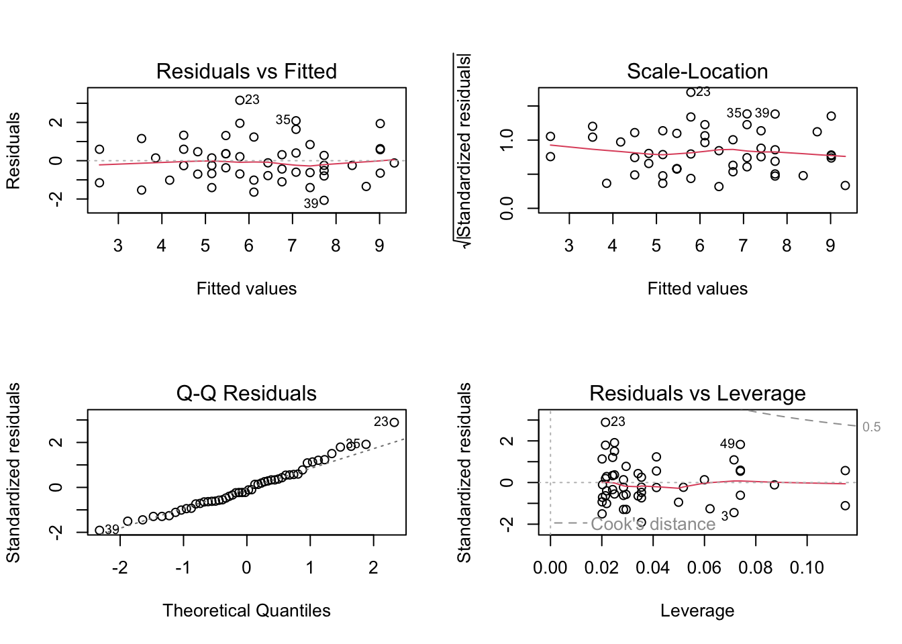
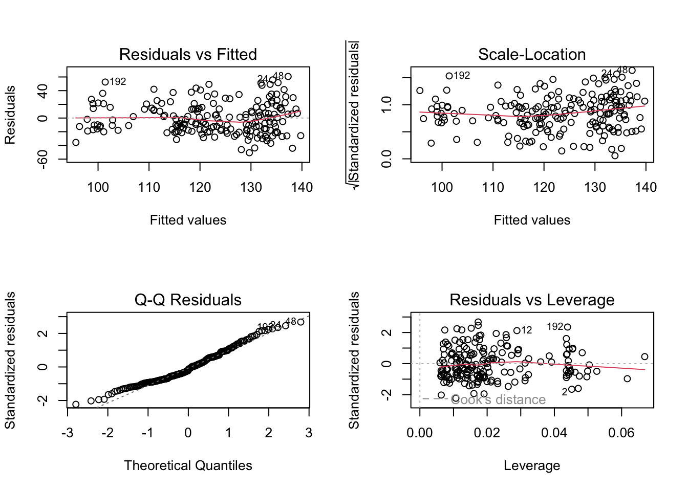
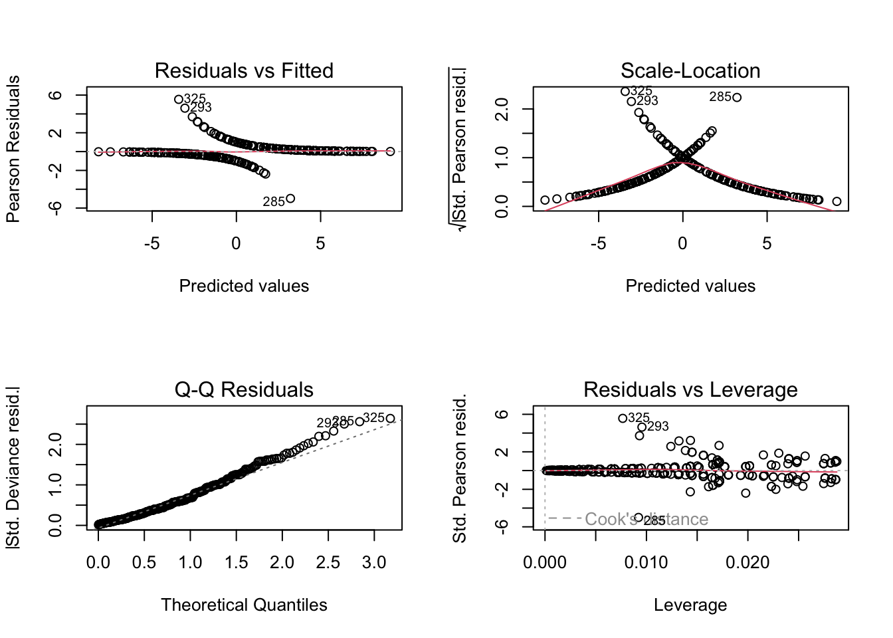
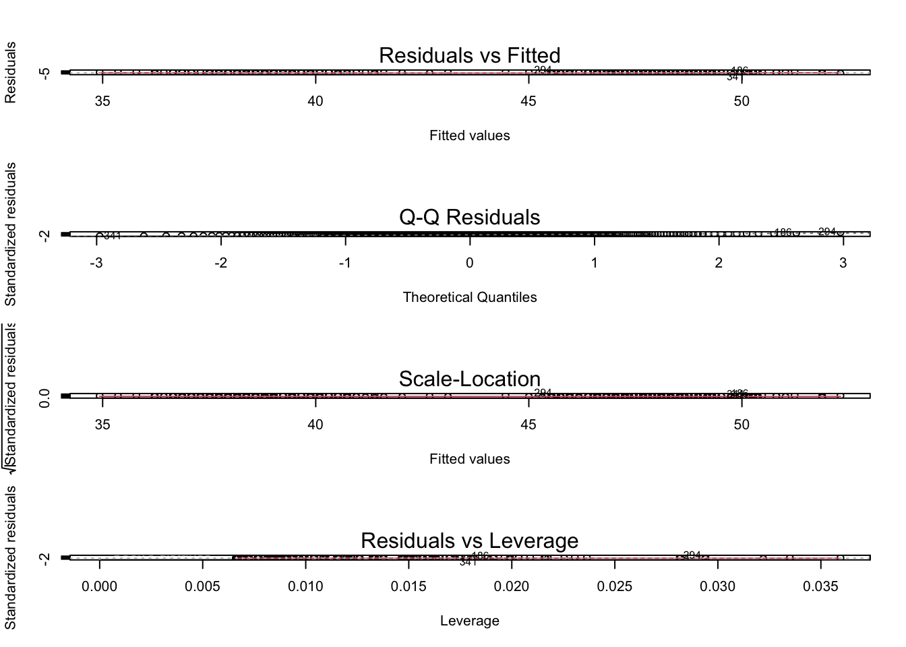

plot(cars, xlab="Speed (mph)", ylab="Distance to stop (ft)", bty='n')
abline(-17.6, 3.9)
Linear regression means drawing a straight line through a scatterplot of the data. That’s easy to picture when there is a single feature, so let’s look at an example.
plot(cars, xlab="Speed (mph)", ylab="Distance to stop (ft)", bty='n')
abline(-17.6, 3.9)
We have a special term for the difference between the fitted line and the true dots. We call the differences residuals, and there is one per dot. The difference is calculated as the vertical distance, as shown here:

Obviously, you’d want your model of the response to fit perfectly but there’s no line that would go through all the points.
A line is totally defined by its slope and intercept (intercept is where the line crosses the y-axis). The math of linear regression is just a way to calculate the slope and intercept of that line, and its intuition is also quite simple. It starts with the goal of minimizing the errors. There is an error for each dot, which is the difference between the line and the dot. To minimize the errors, we need to combine all those numbers into one (otherwise, you might have to worry about what effect a change in “A” has on “B”, etc.) A natural way to combine many numbers into one is to add them together (or take the mean, which is adding together and then dividing by a constant. Since the constant doesn’t change, we can leave it out or not without affecting the location of the minimum.) But there is a problem: errors can be negative (when the model fit is greater than the observed data.) A large negative error would be a good thing for “minimizing” error, but we don’t want that because the error is large. So the errors are squared before adding them together. This is the origin of terms you might have heard, like the sum of squared errors or the mean squared error.
We call each dot an “observation”, and each one comes from one row of the spreadsheet. Each column of the spreadsheet is a “feature”. One column is special because it is the column where errors are calculated. We call that column the “response”.
Let’s say what we mean by a “linear model”. This is an equation that describes some output variable as a linear function of some input variable(s).
Note that the linear model is a relationship, while linear regression is a method of estimating that relationship. But since it is by far the most common way of estimating that relationship, the terms have come to be used interchangeably.
lm() function in RThe function to estimate a linear regression model in R is called lm(). We’ll get quite familiar with the function during this workshop. Now let’s use it to estimate the regression line in our distance-to-stop example.
stop_model = lm(dist ~ speed, data=cars)
summary(stop_model)
Call:
lm(formula = dist ~ speed, data = cars)
Residuals:
Min 1Q Median 3Q Max
-29.069 -9.525 -2.272 9.215 43.201
Coefficients:
Estimate Std. Error t value Pr(>|t|)
(Intercept) -17.5791 6.7584 -2.601 0.0123 *
speed 3.9324 0.4155 9.464 1.49e-12 ***
---
Signif. codes: 0 '***' 0.001 '**' 0.01 '*' 0.05 '.' 0.1 ' ' 1
Residual standard error: 15.38 on 48 degrees of freedom
Multiple R-squared: 0.6511, Adjusted R-squared: 0.6438
F-statistic: 89.57 on 1 and 48 DF, p-value: 1.49e-12There is a bit of unique R code in the call to lm(): it uses R’s formula syntax. A formula in R has the response variable on the left of a tilde (~) and predictors on the right. You may see it in other contexts but its most common use is to specify the variables of a regression formula. Having used the lm() function to estimate the regression model, we then use the summary() function to inspect the model fit. Let’s dig into the summary() output.
The important parts of the summary() results are the Coefficients: and below. The first two parts of the summary() result (Call: and Residuals:) are usually not very interesting. At this point, you probably recognize that the Call: is repeating back the function call that created the model, and the Residuals: section tells you about the size of the residuals.
Starting with Coefficients: we begin to learn about the model fit. You remember that the linear model fits a straight line to the data. And you might also know that you can describe a line by its slope and intercept, as in \(y = ax + b\). In that equation, \(b\) is the intercept and \(a\) is the slope, also known as the coefficient of \(x\). The coefficient of speed functions as the slope of our line, and it is listed in the Estimate column. As you might guess, the intercept of the estimated line is listed as under the Estimate column and the (Intercept) row.
The Std. Error column is an estimate of uncertainty in the coefficient estimates. The t value column is just the Estimate divided by the Std. Error, and it is used to calculate the Pr(>|t|) column (better known as the coefficient p-value.)
The remaining information (Residual standard error, degrees of freedom, Multiple R-squared, Adjusted R-squared, F-statistic, and p-value) is beyond this introductory workshop. Just know that the p-value reported here is almost useless.
In contrast, the coefficient p-values, reported as Pr(>|t|) in the Coefficients: table, are often the main focus of analysis. Making use of these p-values and interpreting the asterisks as indicators of statistical significance depends on proper use of the lm() function. In particular, you must decide which variables to use before fitting a model, and you can only try once - otherwise, the p-values will be biased by peeking at the result before doing the test.
There are a few assumptions about your data that come with linear regression. Before you can accept the results, you must check these: 1. Linearity: The actual relationship between the features and the response is linear. A trend in the fitted vs. residual plot is evidence that the linearity assumption may be wrong. 2. Check that the residuals have a normal distribution. You can check this via the Q-Q plot, which should have all the dots in an approximately straight line. 3. Constant/equal residual variance: The residuals should have the same variability, also called the scale. Confirm this by the location-scale plot. 4. The residuals must be independent of each other. You can’t actually check this from the data, so you have to think carefully about how the value of one residual might depend upon others (for instance if they are measured at locations that touch, maybe there is something that affects both.) Data collection should be planned in order to have independent responses.
Let’s check the assumptions on the distance-to-stop model:
layout(matrix(1:4, 2, 2))
plot(stop_model)
Here, there is a slight fan-shaed pattern in the Residual v. Fitted plot, and an increasing trend in the Scale-Location plot. Both of these indicate that the variances of the residuals aren’t equal. You can also see the Q-Q plot deviate from the dotted diagonal line, which indicates that the residuals may not be all from an identical normal distribution. The deviations from ideal are pretty minor, and you could probably rely on this model to predict new data. But a more correct model is possible by applying a transformation that mutes the variability of the largest values (often that’s a log transformation, but here a square-root transformation would be ideal.)
stop_model_sqrt = lm(sqrt(dist) ~ speed, data=cars)
summary(stop_model_sqrt)
Call:
lm(formula = sqrt(dist) ~ speed, data = cars)
Residuals:
Min 1Q Median 3Q Max
-2.0684 -0.6983 -0.1799 0.5909 3.1534
Coefficients:
Estimate Std. Error t value Pr(>|t|)
(Intercept) 1.27705 0.48444 2.636 0.0113 *
speed 0.32241 0.02978 10.825 1.77e-14 ***
---
Signif. codes: 0 '***' 0.001 '**' 0.01 '*' 0.05 '.' 0.1 ' ' 1
Residual standard error: 1.102 on 48 degrees of freedom
Multiple R-squared: 0.7094, Adjusted R-squared: 0.7034
F-statistic: 117.2 on 1 and 48 DF, p-value: 1.773e-14layout(matrix(1:4, 2, 2))
plot(stop_model_sqrt)
Our example above has just a single feature to create a model for the response. It is more common to have multiple features, and there really is no limit to how many. However, if the number of features is greater than the number of observations, then we will have problems with the estimation methods. So assume \(p<n\).
When there are multiple features, it is no longer possible to draw the relationship as a line through a scatterplot. But everything else works just the same.
A common question is how to decide which features to include in a model. A definitive answer is probably impossible, since well-one model selection (as it is called) is the product of experience and expertise with the system that you’re modeling. In the simplest terms, the correct features for your model are the ones that are relevant to your study. They should be considered carefully before trying to estimate the model, and of course you have to keep in mind assumption (1) for linear models: “The actual relationship between the features and the response is linear.” This is a theory-driven approach to model selection, because you begin with an idea of the model you want to fit, and then tell the computer to estimate it.
There are data-driven ways of doing model selection, most of which can be summarized as: try a model and then change it to get a better fit. These approaches are dangerous because they tend to over-fit the training data, which usually makes the model less useful for future data.
We won’t put much emphasis on generalized linear models (GLMs) in this workshop, but they are important and so you might want to know about them. GLMs are used when the response variable has some distribution other than normal - logistic regression (binary response) is by far the most commonly used GLM and Poisson regression (count response) is fairly common, too. In any case, the differences between an ordinary linear model and a generalized linear model are fairly minor.
The UK introduced a law to require seatbelts in January 1983. We have a dataset of the monthly driver fatalities in the UK from 1969 through 1984, and want to estimate what effect the seatbelt law had on driver fatalities. The Seatbelts data set is built into R and can be imported via data("Seatbelts"). The relevant columns are DriversKilled, kms, PetrolPrice, and law.
data("Seatbelts")
seatbelt_model = lm(DriversKilled ~ kms + PetrolPrice + law, data = Seatbelts)
summary(seatbelt_model)
Call:
lm(formula = DriversKilled ~ kms + PetrolPrice + law, data = Seatbelts)
Residuals:
Min 1Q Median 3Q Max
-50.69 -17.29 -4.05 14.33 60.71
Coefficients:
Estimate Std. Error t value Pr(>|t|)
(Intercept) 2.015e+02 1.626e+01 12.393 < 2e-16 ***
kms -1.223e-03 6.657e-04 -1.838 0.067676 .
PetrolPrice -5.683e+02 1.521e+02 -3.738 0.000246 ***
law -1.189e+01 6.026e+00 -1.973 0.049955 *
---
Signif. codes: 0 '***' 0.001 '**' 0.01 '*' 0.05 '.' 0.1 ' ' 1
Residual standard error: 22.87 on 188 degrees of freedom
Multiple R-squared: 0.201, Adjusted R-squared: 0.1882
F-statistic: 15.76 on 3 and 188 DF, p-value: 3.478e-09layout(matrix(1:4, 2, 2))
plot(seatbelt_model)
Here is an example of a logistic regression model, where we use the species and body mass of penguins to estimate their sex. The data are in the palmerpenguins package, which was created by Allison Horst to compile data on penguins of three species taht were measured at the Palmer Long Term Ecological Research Station in Antarctica.
# load the palmerpenguins package and attach the data
library(palmerpenguins)
data(penguins)
m_penguin_sex = glm(sex ~ species + body_mass_g, data=penguins, family='binomial')
summary(m_penguin_sex)
Call:
glm(formula = sex ~ species + body_mass_g, family = "binomial",
data = penguins)
Coefficients:
Estimate Std. Error z value Pr(>|z|)
(Intercept) -2.713e+01 2.998e+00 -9.049 <2e-16 ***
speciesChinstrap -2.559e-01 4.293e-01 -0.596 0.551
speciesGentoo -1.018e+01 1.195e+00 -8.520 <2e-16 ***
body_mass_g 7.373e-03 8.141e-04 9.056 <2e-16 ***
---
Signif. codes: 0 '***' 0.001 '**' 0.01 '*' 0.05 '.' 0.1 ' ' 1
(Dispersion parameter for binomial family taken to be 1)
Null deviance: 461.61 on 332 degrees of freedom
Residual deviance: 212.09 on 329 degrees of freedom
(11 observations deleted due to missingness)
AIC: 220.09
Number of Fisher Scoring iterations: 6layout(matrix(1:4, 2, 2))
plot(m_penguin_sex)
m_penguin_bill = lm(bill_length_mm ~ flipper_length_mm + species, data=penguins)
summary(m_penguin_bill)
Call:
lm(formula = bill_length_mm ~ flipper_length_mm + species, data = penguins)
Residuals:
Min 1Q Median 3Q Max
-6.662 -1.746 0.028 1.825 12.354
Coefficients:
Estimate Std. Error t value Pr(>|t|)
(Intercept) -2.05859 4.03855 -0.510 0.611
flipper_length_mm 0.21505 0.02123 10.129 < 2e-16 ***
speciesChinstrap 8.78010 0.39912 21.998 < 2e-16 ***
speciesGentoo 2.85689 0.65861 4.338 1.9e-05 ***
---
Signif. codes: 0 '***' 0.001 '**' 0.01 '*' 0.05 '.' 0.1 ' ' 1
Residual standard error: 2.596 on 338 degrees of freedom
(2 observations deleted due to missingness)
Multiple R-squared: 0.7758, Adjusted R-squared: 0.7739
F-statistic: 390 on 3 and 338 DF, p-value: < 2.2e-16layout(1:4, matrix(2, 2))
plot(m_penguin_bill)